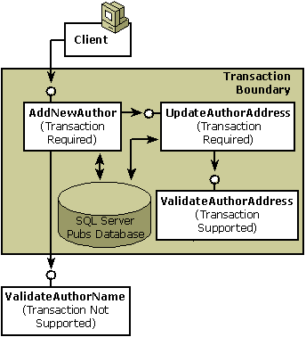
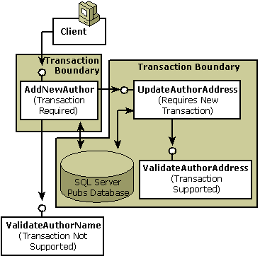

In this step, you will learn about the following:
Two previous parts of this COM+ services primer, Step 1: Creating a Transactional Component and Step 2: Extending a Transaction Across Multiple Components show how to write one component that calls a second component to assist in completing some work, updating author information in the Microsoft SQL Server Pubs database; all work is protected by a single transaction. The sample components focused on the work of updating an author's data and verifying the author's address, and COM+ provided transaction processing, JIT activation, and concurrency protection.
This step demonstrates how to reuse the components created in steps 1 and 2 and looks at what this means to the design of those components. As shown in the following illustration, this means creating a new component, AddNewAuthor, that adds new authors to the database by calling UpdateAuthorAddress.

In addition to reusing existing component functionality, AddNewAuthor calls another new component called ValidateAuthorName. As the preceding illustration shows, ValidateAuthorName is non-transactional. The transaction attribute value for this component is left at its default setting (Not Supported) to exclude its work from the transaction. As shown in the step 3 sample code, ValidateAuthorName performs read-only queries on the database, and the failure of this minor task should not have the potential to abort the transaction. However, the transaction attribute value of the AddNewAuthor component is set to Required.
The AddNewAuthor, UpdateAuthorAddress, and ValidateAuthorAddress components all vote in the transaction. In this transaction, AddNewAuthor is the root object. COM+ always makes the first object created in the transaction the root object.
In this example, reusing the UpdateAuthorAddress component is easy—COM+ automatically delivers the expected services. However, the results would be different if the transaction attribute value of the UpdateAuthorAddress component were initially set to Requires New instead of Required. On the surface, both settings appear similar; both guarantee a transaction. Requires New, however, always starts a new transaction, while Required starts a new transaction only when the object's caller is non-transactional. You can see from this how important it was to configure UpdateAuthorAddress carefully and thoughtfully. Otherwise, COM+ might have interpreted the service request differently, generating two unrelated transactions, as shown in the following illustration, instead of one.

[!Note]
When you reuse components, make sure the services are configured to support your desired outcome.
Â
The AddNewAuthor component performs batch additions of new authors by allowing the object to remain active until the client releases its reference to the object.
Option Explicit
'
' Purpose: This class is used for adding a new author.
'
' Notes: IMPT: This component implicitly assumes that it will
' always run in a transaction. Undefined results may
' otherwise occur.
'
' AddNewAuthor
'
Public Sub AddNewAuthor( _
ByVal strAuthorFirstName As String, _
ByVal strAuthorLastName As String, _
ByVal strPhone As String, _
ByVal strAddress As String, _
ByVal strCity As String, _
ByVal strState As String, _
ByVal strZip As String, _
ByVal boolContracted As Boolean)
' Handle any errors.
On Error GoTo UnexpectedError
' Verify component is in a transaction.
' The VerifyInTxn subroutine is described in Step 1.
VerifyInTxn
' Get our object context.
Dim objcontext As COMSVCSLib.ObjectContext
Set objcontext = GetObjectContext
' Get the IContextState object.
Dim contextstate As COMSVCSLib.IContextState
Set contextstate = objcontext
' Validate that the author is OK.
' The ValidateAuthorName function is described after this function.
Dim oValidateAuthName As Object
Dim bValidAuthor As Boolean
Set oValidateAuthName = CreateObject("ComplusPrimer.ValidateAuthorName")
bValidAuthor = oValidateAuthName.ValidateAuthorName( _
strAuthorFirstName, strAuthorLastName)
If Not bValidAuthor Then
Err.Raise 999999, "The AddNewAuthor component", _
"You tried to add an author on the banned list!"
End If
' Open the connection to the database.
Dim conn As ADODB.Connection
Set conn = CreateObject("ADODB.Connection")
' Specify the OLE DB provider.
conn.Provider = "SQLOLEDB"
' Connect using Windows Authentication.
Dim strProv As String
strProv = "Server=MyDBServer;Database=pubs;Trusted_Connection=yes"
' Open the database.
conn.Open strProv
' Tell the database to actually add the author; use empty strings
' for this part and rely on the UpdateAuthorAddress
' component to validate the address/phone/etc data.
' Default Contract flag is off.
Dim strUpdateString As String
strUpdateString = "insert into authors values(_
'789-65-1234'," & _
strAuthorLastName & ", " & _
strAuthorFirstName & ", " & _
"'(555) 555-5555', ', ', ', '98765', "
If boolContracted Then
strUpdateString = strUpdateString + "1)"
Else
strUpdateString = strUpdateString + "0)"
End If
conn.Execute strUpdateString
' Close the connection; this potentially allows
' another component in the same transaction to
' reuse the connection from the connection pool.
conn.Close
Set conn = Nothing
' Create the UpdateAuthorAddress component.
Dim oUpdateAuthAddr As Object
Set oUpdateAuthAddr = CreateObject("ComplusPrimer.UpdateAuthorAddress")
' The component throws an error if anything goes wrong.
oUpdateAuthAddr.UpdateAuthorAddress "", strPhone, _
strAddress, strCity, strState, strZip
Set oUpdateAuthAddr = Nothing
' Everything works--commit the transaction.
contextstate.SetMyTransactionVote TxCommit
' Design issue: Allow batch additions of new
' authors in one transaction, or should each new author be added
' in a single new transaction?
contextstate.SetDeactivateOnReturn False
Exit Sub
UnexpectedError:
' There's an error.
contextstate.SetMyTransactionVote TxAbort
contextstate.SetDeactivateOnReturn True
End Sub
The ValidateAuthorName component validates author names before AddNewAuthor adds the name to the database. This component throws an error back to its caller if something unexpected happens.
Option Explicit
'
' Purpose: This class is used for validating authors before
' adding them to the database.
'
' Notes: This component doesn't need to be in a transaction because
' it is performing read-only queries on the database,
' especially since these queries are not overlapping with
' any updates of end-user data. If an unexpected error
' happens, let the error go back to the caller who
' needs to handle it.
'
Public Function ValidateAuthorName( _
ByVal strAuthorFirstName As String, _
ByVal strAuthorLastName As String _
) As Boolean
ValidateAuthorName = False
' Open the connection to the database.
Dim conn As ADODB.Connection
Set conn = CreateObject("ADODB.Connection")
' Specify the OLE DB provider.
conn.Provider = "SQLOLEDB"
' Connect using Windows Authentication.
Dim strProv As String
strProv = "Server=MyDBServer;Database=pubs;Trusted_Connection=yes"
' Open the database.
conn.Open strProv
' Suppose another hypothetical table has been added to the Pubs
' database, one that contains a list of banned authors.
Dim rs As ADODB.Recordset
Set rs = conn.Execute("select * from banned_authors")
' Loop through the banned-author list looking for the specified
' author.
While Not rs.EOF
If rs.Fields("FirstName") = strAuthorFirstName And _
rs.Fields("LastName") = strAuthorLastName Then
' This is a banned author.
conn.Close
Set conn = Nothing
Set rs = Nothing
Exit Function
End If
rs.MoveNext
Wend
' None of the added authors found in the banned list.
ValidateAuthorName = True
conn.Close
Set conn = Nothing
Set rs = Nothing
End Function
Step 1: Creating a Transactional Component
Step 2: Extending a Transaction Across Multiple Components
Â
Â